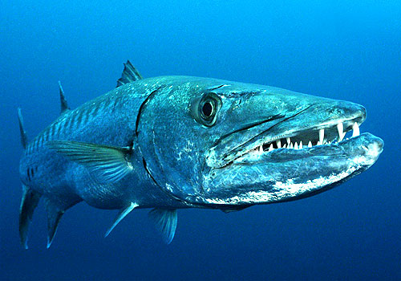

Barakuda adalah ikan dalam kelas Actinopterygii yang dikenal berwujud menyeramkan dan berukuran tubuh besar, yaitu sampai panjang enam kaki dan lebar satu kaki.[2] Tubuhnya panjang dan ditutupi oleh sisik yang halus. Ikan ini dapat ditemukan di samudra tropis dan subtropis di seluruh dunia. Barakuda adalah anggota genus Sphyraena, satu-satunya genus dalam familia Sphyraenidae.